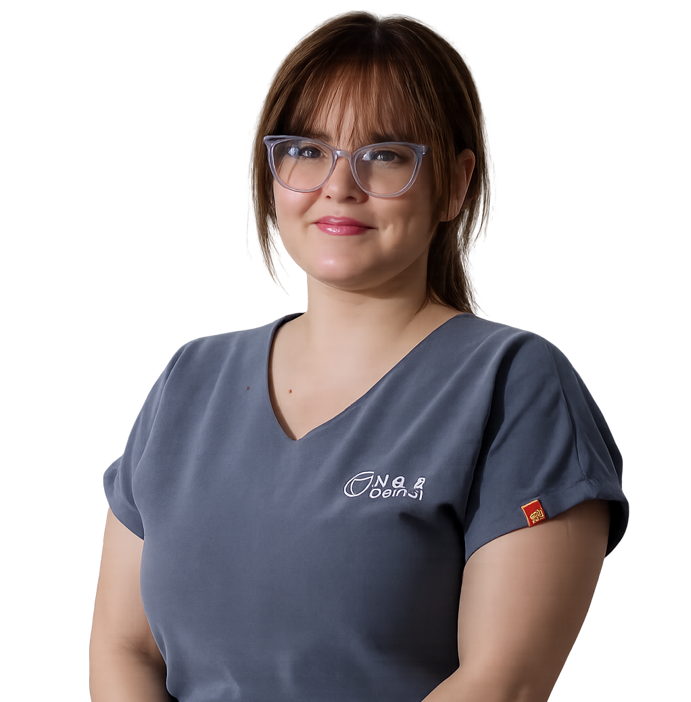
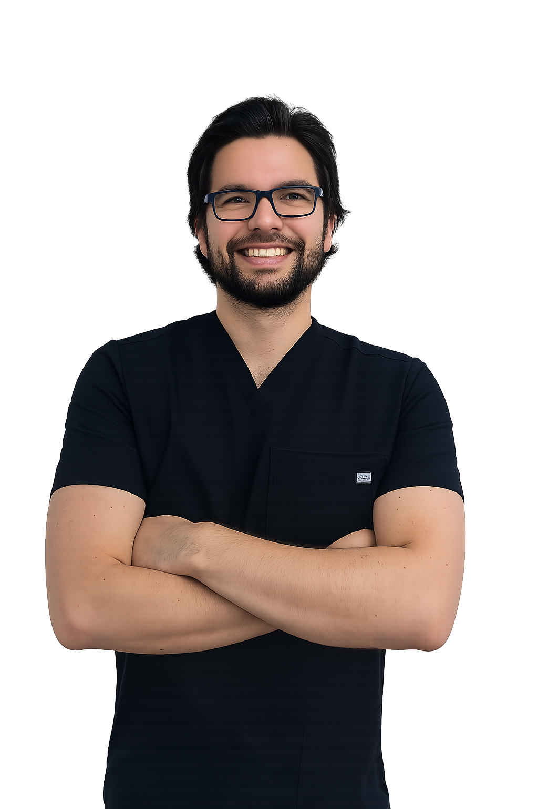
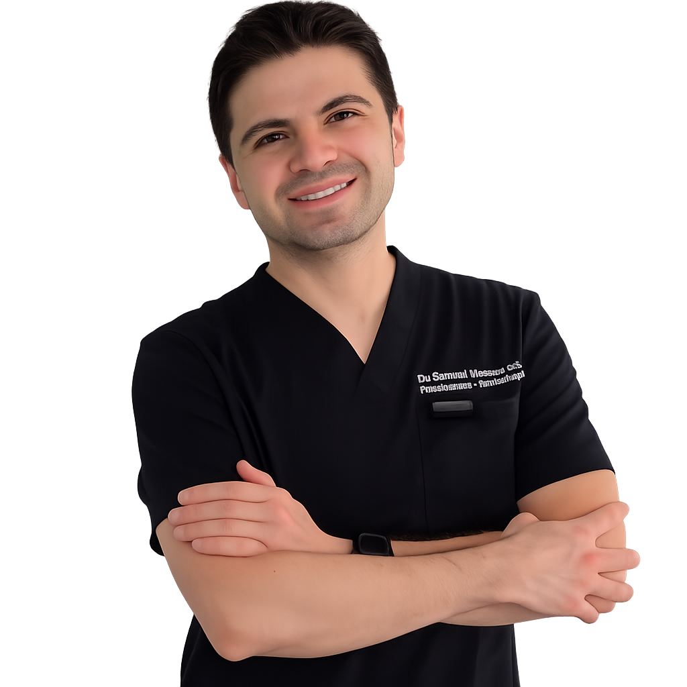
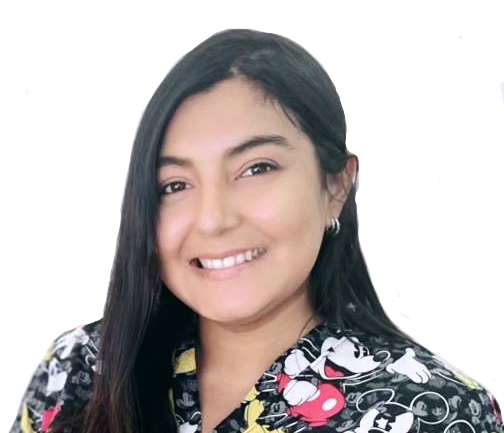
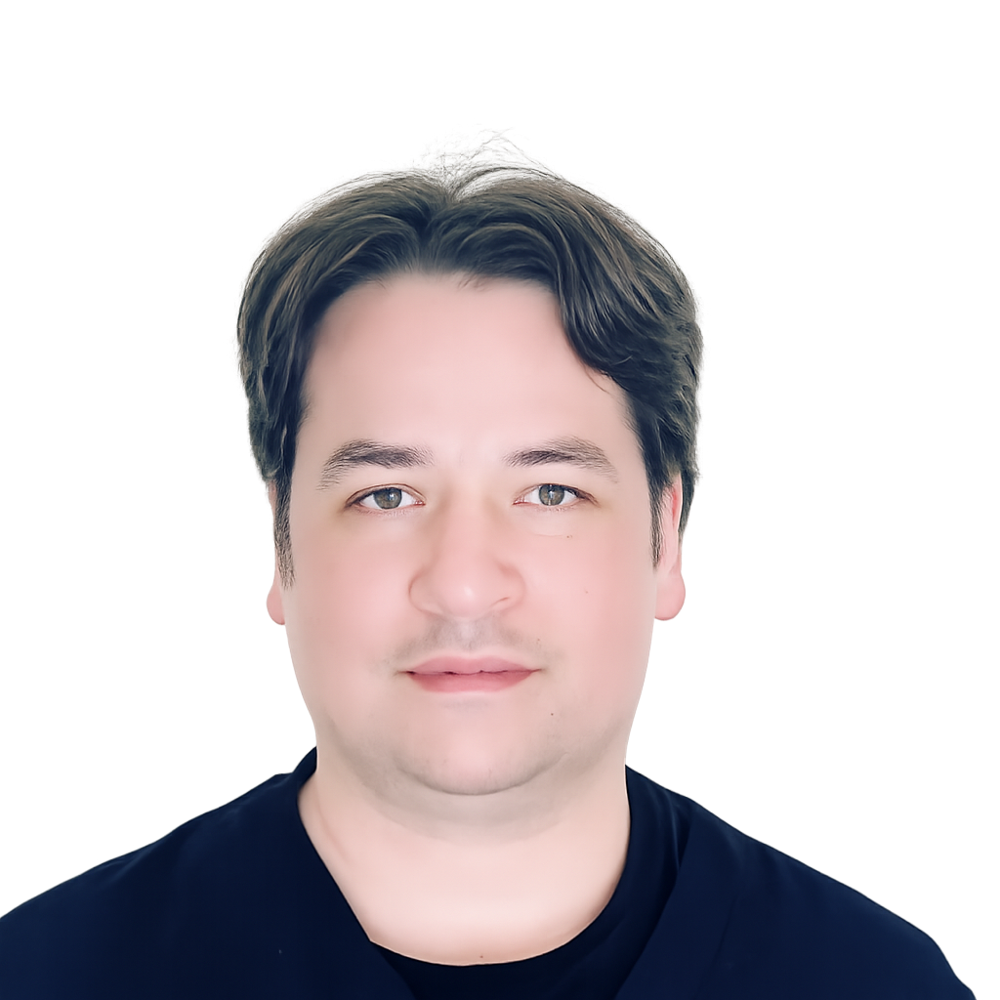
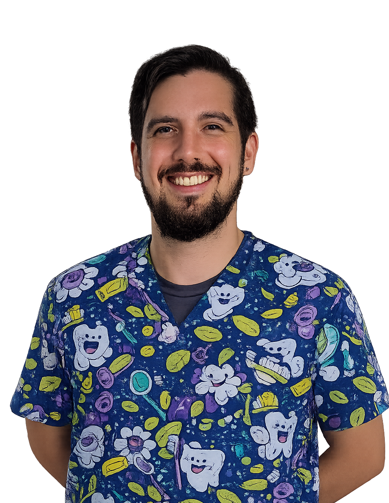
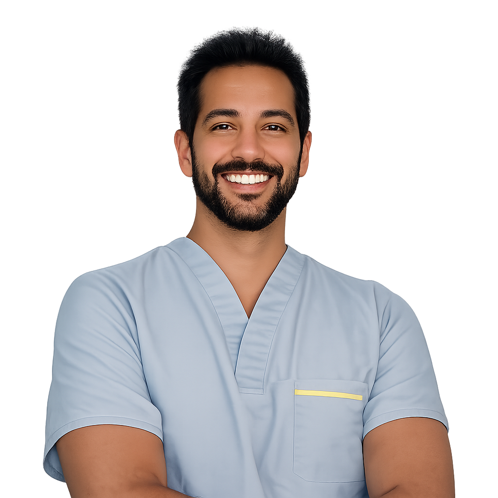

Los mejores servicios de odontología en los que puede confiar.
Si está buscando un dentista confiable, estamos aquí para ayudarle. Somos conocidos por los mejores tratamientos dentales asequibles e indoloros con citas rápidas y soluciones oportunas.
Reservar una citaSobre Nosotros
Tradición, tecnología y corazón en el centro de Copiapó.


Nuestras Especialidades
Endodoncia
Tratamiento especializado en el interior del diente para salvar piezas dañadas y eliminar infecciones.
Periodoncia e implantología
Prevención y tratamiento de enfermedades de las encías y recuperación de dientes mediante implantes dentales.
Ortodoncia
Corrección de la alineación dental y problemas de mordida para una mejor función y estética.
Odontopediatría
Atención dental integral para niños en todas sus etapas de crecimiento y desarrollo.
Prótesis fija y removible
Restauración de la anatomía y función de una o más piezas dentales perdidas.
Odontología familiar
Cuidado bucal preventivo y correctivo para pacientes de todas las edades.
Nuestros Especialistas

Dra. Elba Rivera Del Portillo
Cirujano dentista Universidad de Valparaíso año 2014.
Diplomado en diagnóstico de patología de los huesos maxilares. Universidad Católica año 2024.
Diplomado de actualización en diagnóstico y tratamiento de patología de la mucosa oral. Universidad Católica año 2023.

Dr. Luis Nehme Sancho
Cirujano Dentista Universidad de Valparaíso año 2014.
Especialidad de endodoncia U. De Chile año 2021.

Dr. Manuel Manríquez
Cirujano dentista Universidad de Valparaíso año 2018.
Especialista en Ortodoncia y Ortopedia Dento Maxilo Facial, Universidad de Valparaíso (c).
Diplomado en Diagnóstico de Anomalías Dento Maxilo faciales, Universidad de Chile.
Diplomado en Estabilidad Mandibular, Oclusión Dentaria y Posición Inicial de Tratamiento, Universidad del Desarrollo.
Diplomado en Crecimiento y Desarrollo Craneofacial Aplicado a la Ortodoncia Interceptiva, Pontificia Universidad Católica de Chile.
Diplomado en Ortodoncia Interceptiva, Universidad de Valparaíso.
Diplomado en Salud Familiar y Comunitaria, Universidad de los Andes.

Dra. Shigrid Parra Mella
Cirujano dentista Universidad de Concepción año 2019.
Especialista en Odontopediatría Universidad Andrés Bello año 2024.
Diplomado en salud familiar. Diplomado en ortodoncia interceptiva.
Diplomado en sedación y analgesia en odontología.
Curso en aplicación láser diodo en odontología.

Dr. Daniel Dalmazzo Contreras
Cirujano Dentista Universidad Mayor, año 2005.
Especialista en Periodoncia e implantología, Universidad Mayor, año 2010.

Dr. Camilo Quispe
Cirujano Dentista Universidad de Valparaíso año 2015.

Dr. Nicolas Coria Labarca
Cirujano Dentista Universidad de Antofagasta año 2018.